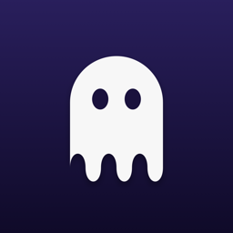

SpookyPochi minuti, una volta sola.
Scarica Spooky.pkg e aprilo. Installa Spooky in Applicazioni e Spooky Microphone, che permette al Mac di usare il microfono dell'iPad. Il pacchetto è firmato e notarizzato da Apple.
Spooky vive nella barra dei menu, come un piccolo fantasma. La prima volta chiede due permessi di macOS: Registrazione schermo, per mostrare lo schermo del Mac sull'iPad, e Accessibilità, per muovere il mouse e scrivere dall'iPad. macOS chiede conferma in Impostazioni di Sistema; Spooky si accorge da solo quando il permesso è attivo.
L'app arriverà presto sull'App Store.
Sul Mac scegli Associa un iPad… nel menu di Spooky e inquadra il codice con l'app. Se il Mac e l'iPad usano lo stesso Account Apple, il Mac compare anche da solo, tramite iCloud.
Installa Tailscale sul Mac e sull'iPad o sull'iPhone, con lo stesso account. Così Spooky raggiunge il Mac da ovunque.
I dispositivi Apple condividono un collegamento Wi-Fi diretto (lo usano AirDrop e Cursore e tastiera) che può allontanare per un attimo l'iPad dalla rete di casa. Se lo streaming fa piccoli scatti a intervalli regolari: